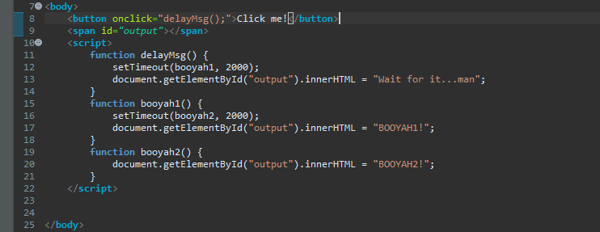

1. What is the difference between the following 2 statements? setTimeout(booyah,
2000); setTimeout(booyah(), 2000);
The setTimeout(booyah, 2000) statement waits for the 2000ms and
executes the booyah function. setTimeout(booyah(), 2000) it
calls the function immediately, rather than waiting the 2000ms!
2. What do the following 2 alerts display (answer without running the
code)? var myfunc = function(a, x) { return a * x;
}; var x = myfunc(2, 3); var y = myfunc;
alert(x); alert(y(2,3));
This code gives two alerts with 6 in the message.
3. Write functions booyah1 and booyah2 so that in both cases below,
an alert box comes up after 2 seconds that says "BOOYAH!"
setTimeout(booyah1, 2000); setTimeout(booyah2(), 2000);

4. What is "Unobtrusive Javascript"? What is the
practical application of Unobtrusive Javascript (and the reasons for
using it)?
Unobtrusive Javascript HTML with minimal JavaScript
inside uses the DOM to attach and execute all JavaScript
functions allows separation of web site into 3 major
categories: content (HTML) - what is it?
presentation (CSS) - how does it look? behavior (JavaScript)
- how does it respond to user interaction?
Application
of Unobtrusive Javascript well-written JavaScript code
should contain as little CSS as possible use JS to set CSS
classes/IDs on elements define the styles of those
classes/IDs in your CSS file